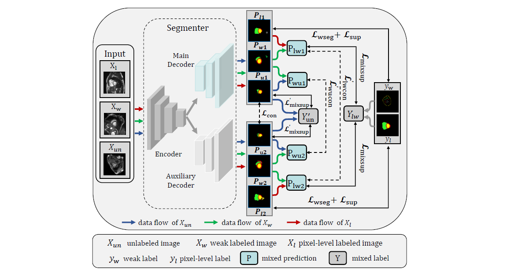

|
Xiangtao Wang(王向涛)
Postgraduate Student Hebei University of Technology Email: whispers2860 [at] gmail.com CV • Google Scholar • GitHub • |
About
|
I am a third-year postgraduate student in Intelligent Healthcare and Big Data Team at the Hebei University of Technology, supervised by Prof. Zhenghua Xu.
|
News
- [Dec., 2023] One paper is Major revision of TMI!
- [Nov., 2023] One paper is accepted to TNSE!
- [Sept., 2023] Two papers are submitted to TMI!
- [Jul., 2023] One paper is submitted to TCSVT!
- [Feb., 2023] Two papers accepted by ICASSP 2023!
Research
|
MPS-AMS: Masked Patches Selection and Adaptive Masking Strategy Based Self-Supervised Medical Image Segmentation |
|
MvCo-DoT: Multi-View Contrastive Domain Transfer Network for Medical Report Generation |
AMLP: Adaptive Masking Lesion Patches for Self-supervised Medical Image Segmentation | |
C2M-DoT: Cross-modal Consistent Multi-view Medical Report Generation with Domain Transfer Network | |
 |
SW-Seg: Semi- and Weakly-Supervised Learning for Accurate Medical Image Segmentation Using Inaccurate Scribble Annotations |
Collaborative Attention Guided Multi-Scale Feature Fusion Network for Medical Image Segmentation |


Selected Awards
- Graduate Academic Scholarship of Class 2 (top 15%), 2023.
- Bronze Prize, the 8th National Undergraduate Biomedical Engineering Innovation Design Competition, 2023.
- 1st place in Graduate Academic Scholarship of the major (top 10%), 2022.
- Merit Student (top 10%), 2022.
- Bronze Prize, the 7th National Undergraduate Biomedical Engineering Innovation Design Competition, 2022.
- Silver Prize of the 12th National Undergraduate Mathematics Contest (non-mathematics), 2020.
- Bronze Prize of the 8th APMCM Asia-Pacific University Mathematical Contest in Modeling, 2018.
Miscellaneous
|
I like running and photograph. |
Xiangtao WangLast updated: November.14, 2023